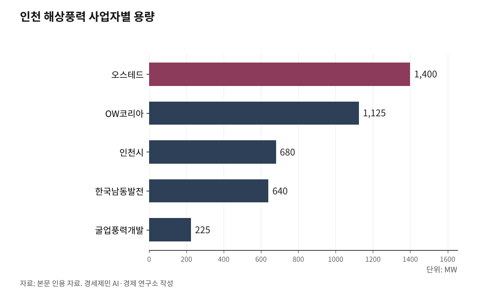
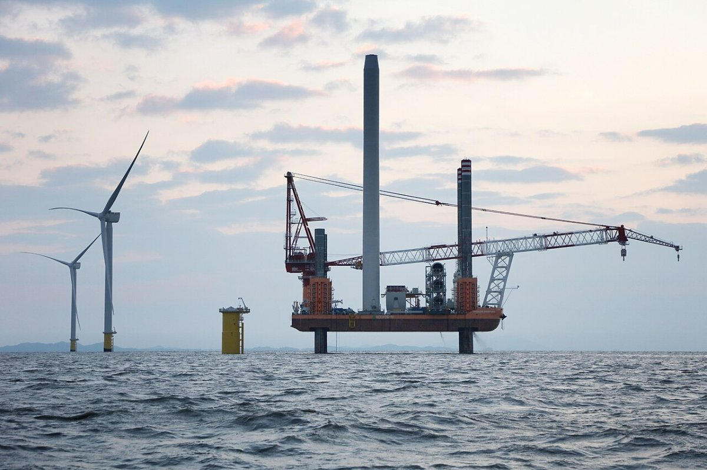

[인천해양주권⑨] 7월에 맡기고 9월에 없앤다, 인천 해상풍력 부두
해양수산부 7월 20일 고시, 21조4000억원 가운데 13조1000억원은 항만공사 등 몫
지원부두 맡을 주체 논의 중에 통합 발표, 국회는 6월에 항만공사 일 넓혀
AI경세제민=김갑봉 기자 | 해양수산부는 7월 20일 제4차 전국 항만기본계획 수정계획을 고시했다. 목포항과 군산항과 인천항과 울산항에 대형 풍력 기자재를 다룰 전용 부두를 짓는다고 적었다.
마흔다섯 날 뒤 정부는 그 항만을 맡아 온 인천항만공사를 없애겠다고 발표했다. 해상풍력 발전단지를 어디에 둘지 정하는 권한은 공사에 없지만, 그 단지를 세우고 고칠 부두는 공사의 일이다. 그 일을 맡을 주체가 비어 있는 사실로 짚는다.
바다 위는 국무총리실, 부두는 항만공사

해상풍력 보급 촉진 및 산업 육성에 관한 특별법이 3월 26일 시행됐다. 이 법 제6조는 국무총리 소속으로 해상풍력발전위원회를 둔다.
예비지구는 제14조 제1항에 따라 기후에너지환경부장관과 해양수산부장관이 지정한다. 위원회의 심의·의결을 거친다. 발전지구는 제19조 제1항에 따라 기후에너지환경부장관이 지정한다.
위원회는 위원장 둘을 포함해 25명 이내로 꾸리고 위원장 한 사람이 국무총리다. 당연직 위원은 재정경제부장관과 국방부장관과 행정안전부장관 등 중앙행정기관의 장이다. 시·도지사는 당연직에 없다. 위촉위원을 고를 때 지방자치단체에서 후보를 추천받거나 의견을 들으라는 조항이 제7조 제3항에 있을 뿐이다.
제14조 제1항 제4호는 예비지구 요건에 항만을 넣었다. 항만과 어항의 이용과 운영에 지장을 주지 않아야 한다고 정한다. 풍황과 어업활동과 해상교통과 해양환경과 군사작전이 나머지 요건이다.
발전지구가 고시된 뒤에는 항만을 손대는 일도 협의 사항이 된다. 제19조 제5항 제2호는 항만을 축조하거나 변경하려는 관계 행정기관의 장이 기후에너지환경부장관과 협의하라고 정한다.
부두는 다르다. 항만공사법 제8조 제1항 제1호가 항만시설의 신설과 관리·운영을 공사의 사업으로 정한다. 제4호의2가 재생에너지 설비를 적기는 했으나 공사가 관리하는 부지와 시설로 범위를 묶었다.
앞바다 발전단지는 여기 들지 않는다.

7월 20일 고시가 항만공사에 맡긴 것
제4차 전국 항만기본계획 수정계획은 2026년부터 2030년까지를 담았다. 항만법에 따라 10년 단위로 세우고 5년마다 타당성을 검토하는 항만 분야 최상위 국가계획이다.
수정계획은 목포항과 군산항과 인천항과 울산항에 대형 풍력 기자재를 처리할 전용 부두를 조성한다고 적었다. 목포항 일부는 해상풍력 기자재 전용 기능을 맡도록 고친다.
항만배후단지는 1155만㎡를 더 공급한다. 부산항과 평택당진항과 인천항 등 권역별 거점항만이 대상이다. 전국 항만에는 화물부두 110선석을 더한다.
전국 주요 항만에는 수소와 암모니아 같은 친환경 에너지 시설도 들어선다. 친환경 선박 연료를 채우는 기반도 부산항 등 다섯 항만에 갖춘다.
돈이 어디서 나오는지도 적혀 있다. 2030년까지 21조4000억원을 넣는데 정부 몫이 8조3000억원이다. 나머지 13조1000억원은 민간기업과 지방정부와 항만공사 등이 댄다.
정부가 대는 돈보다 항만공사 등이 대는 돈이 많다.
인천신항 동측, 맡을 주체가 비어 있다

해상풍력 지원부두는 인천신항 컨테이너부두 1-2단계 동측에 들어선다. 배후부지는 31만㎡ 남짓이고 사업비는 3200억원 안팎이다. 인천시는 민간투자를 유치하는 비관리청 항만개발사업으로 2032년까지 짓겠다고 밝혔다.
항만법 제9조 제1항은 항만개발사업을 관리청이 시행한다고 정한다. 관리청이 아닌 자가 시행하려면 제2항에 따라 허가를 받아야 한다. 인천항은 국가관리무역항이어서 관리청이 해양수산부장관이다.
지원부두는 발전단지를 지을 때 집중해 쓰인다. 그 기간이 보통 2~3년이고, 한 사업이 끝난 뒤 다음 물량이 이어지지 않으면 이용률이 떨어진다.
그래서 인천 항만업계에서 공기업이 맡아야 한다는 말이 나왔다. 민간개발 방식으로는 투자비를 거두기 어렵다고 업계는 본다. 7월 21일 경인일보 보도다.
인천항만공사 관계자는 이 부두가 특정 기업들이 이용하는 시설이라고 했다. 공사가 직접 조성하고 운영하는 것이 적절한지는 신중하게 검토해야 한다고 밝혔다.
인천 앞바다에서 해상풍력을 미는 사업자는 여럿이다. 오스테드가 1400㎿, OW코리아가 1125㎿, 한국남동발전이 640㎿, 굴업풍력개발이 225㎿를 잡았고 인천시 몫이 680㎿다.
인천 해상풍력은 2030년 7GW가 목표다. 인천시 입지조사용역은 설치항만 51만㎡와 유지보수 항만 10만2000㎡가 필요하다고 봤다. 확정된 배후부지는 그 절반에 못 미친다.
국회는 6월에 항만공사 일을 넓혔다
국회는 6월 18일 항만공사법 개정안을 본회의에서 통과시켰다. 공포는 7월 7일이고 시행일은 2027년 1월 8일이다. 통과일은 정부가 통합을 발표하기 두 달 반 전이다.
개정의 뼈대는 공사가 하는 일을 늘리는 것이었다. 물류장비 임대 같은 물류서비스업과 친환경 선박 연료 공급망 구축이 사업으로 들어왔다. 공사가 제1항 각 호의 사업을 국외에서 시행할 수 있다는 조항도 신설됐다.
재생에너지를 다루는 제4호의2도 함께 넓어진다. 공사가 관리하는 부지와 시설에 더해 국가나 지방자치단체 소유의 항만시설까지 대상이 된다. 첨단 물류시설과 에너지시설을 항만에 세울 길도 함께 열렸다.
황종우 해양수산부 장관은 이번 법 개정으로 항만의 친환경·스마트화와 AI 대전환을 빠르게 추진해 경쟁력을 한층 강화할 수 있게 됐다고 밝혔다.
넓힌 법이 시행되는 날은 내년 1월 8일이다. 정부가 통합 로드맵을 내놓겠다는 때도 내년 초다.
법이 넓어지는 날과 로드맵이 나온다는 때가 같은 겨울이다.
인천항이 서 있는 자리
제4차 항만기본계획은 인천항의 자리를 환황해권 첨단물류와 고품격 해양문화관광 거점항으로 적어 두었다.
인천신항은 수도권의 대중국 물류 연계를 강화하는 환황해 첨단물류 관문항으로 육성한다고 적혔다. 북항은 수도권 원자재 화물을 처리하는 산업지원 거점항만이고, 남항은 내항 재개발과 묶인 해양관광 벨트의 핵심 거점이다.
박찬대 인천시장은 예비후보이던 5월 11일에 확답을 받았다고 밝혔다. 해양수산부가 인천항을 남북 거점 항만으로 지정하는 것을 반영하겠다고 했다. 그는 6월 3일 득표율 63.49%로 당선돼 7월 1일 취임했다.
남북 항만 교류는 항만공사법 제8조 제1항 제6호의2가 정한 공사의 사업이다.
그 내용이 7월 20일 수정계획에 들어갔다. 취임 열아홉 날 뒤다.
정부가 항만공사 넷을 하나로 묶겠다고 밝힌 것은 9월 3일이다. 취임 예순나흘 만이다.
에너지경제연구원은 2025년 12월 낸 연구보고서에서 해상풍력을 포괄적인 지역발전 전략으로 봐야 한다고 밝혔다. 단순한 저탄소 전원 확대로 다루지 말라고 적었다. 그 전략의 첫 경로로 항만과 배후단지 클러스터를 꼽았다.
인천시의회는 9월 18일 여야가 함께 통합에 반대하는 성명을 냈다. 인천신항 개발과 항만배후단지 확충과 내항 재개발을 인천항의 핵심 사업으로 들었다.
의사결정 권한과 재정 자율성 보장책이 없는 강제 통합은 동의하기 어렵다고 시의회는 밝혔다.
7월에 맡겼고 9월에 없애겠다고 했다. 그 사이가 마흔다섯 날이다.
※ 이 기사는 AI 프로그램 클로드 오푸스 5를 활용해 작성했다.
참고문헌
· 양연빈·이승문(2025), 『해상풍력 보급 확대를 위한 지자체 역할 개선 방안 연구』, 기본연구보고서 2025-03, 에너지경제연구원, 2025.12.31. https://www.keei.re.kr/board.es?mid=a10101020000&bid=0001&act=view&list_no=127050&cg_code=C01
· 해양수산부(2020), 『제4차('21~'30) 전국 항만기본계획(무역항)』 고시 제2020-231호 가운데 「03. 인천항 기본계획」, 2020.12.30. https://www.mof.go.kr/doc/ko/selectDoc.do?docSeq=36906&menuSeq=888&bbsSeq=35
· 『해상풍력 보급 촉진 및 산업 육성에 관한 특별법』 제6조 해상풍력발전위원회, 제7조 위원회 구성·운영, 제14조 예비지구의 지정 등, 제19조 발전지구의 지정, 제40조 항만시설 및 배후시설 등의 지원. 국가법령정보센터, 2026.09.21. 조회.
· 『항만공사법』 제8조 사업. 시행 2026.9.18.과 시행 2027.1.8. 두 판을 함께 확인. 국가법령정보센터, 2026.09.21. 조회. https://www.law.go.kr/법령/항만공사법
· 『항만법』 제2조 정의, 제9조 항만개발사업의 시행자 등. 국가법령정보센터, 2026.09.21. 조회. https://www.law.go.kr/법령/항만법
· 기후에너지환경부(2026), 『해상풍력 개발, 국가 주도 '계획입지'로 전환… 3월 26일부터 제도 시행』 보도자료, 2026.03.17.
· 박진홍(2026), "화물부두 110선석 추가 확보…미래 에너지 항만 구축", 『노컷뉴스』, 2026.07.17. https://m.news.nate.com/view/20260717n03110
· 곽도흔(2026), "李정부 첫 항만 청사진…친환경에너지·해상풍력 중심으로 재편", 『이투데이』, 2026.07.19. https://www.etoday.co.kr/news/view/2604836
· 김주엽(2026), "인천항 '해상풍력' 전용부두·배후단지 조성", 『경인일보』, 2026.07.19. https://www.kyeongin.com/article/1767510
· 이종선(2026), "첫발 뗀 인천해상풍력 배후항만, 영흥도 확장 없인 7GW 역부족", 『인천투데이』, 2026.07.20. https://www.incheontoday.com/news/articleView.html?idxno=321307
· 김주엽(2026), "'사업성 발목' 해상풍력 지원부두… 인천항만공사, 개발 참여론 급부상", 『경인일보』, 2026.07.21. https://www.kyeongin.com/article/1767669
· 이종일(2026), "인천시, 해상풍력 단지 65.8㎢ 발전사업 허가 신청", 『이데일리』, 2026.07.30. https://edaily.co.kr/News/Read?mediaCodeNo=257&newsId=05333286645519768
· 전예준(2026), "박찬대 '인천항 남북협력 거점항만지정, 해수부가 확답'", 『뉴시스』, 2026.05.11. https://www.newsis.com/view/NISX20260511_0003623922
· 김진환(2026), "항만공사 사업 범위 확 넓어지고 국유재산 활용 규제도 개선된다", 『뉴스서울』, 2026.06.18. https://newsseoul.co.kr/news/view/1065607815696018
· 주관철(2026), "인천시의회 여야, 4대 항만공사 강제통합 '초당적 반대'", 『중도일보』, 2026.09.19. https://www.joongdo.co.kr/web/view.php?key=20260919010006439
사진 출처
· [사진 1] 인천중구청, 공공누리 제1유형
· [사진 2] 전라남도, 공공누리 제1유형
※ 이 기사는 인공지능을 활용해 작성했습니다.
관련기사
- [인천해양주권⑩] 부산은 409억, 인천은 진흥원 용역비 5억도 못 받아
- [인천해양주권⑪] 부산은 해양수도 완성, 인천은 해수부 예산안에 사업이 없다
- [인천해양주권⑥] 이재명 정부 항만공사 통합, 부산항 빚 4조4121억원 인천에 전가
- [인천해양주권⑤] LH 분리 PA 통합 '원칙 없는 행정'... 지지율은 최저 기록
저작권자 © AI경세제민 무단전재 및 재배포, AI학습 및 활용 금지